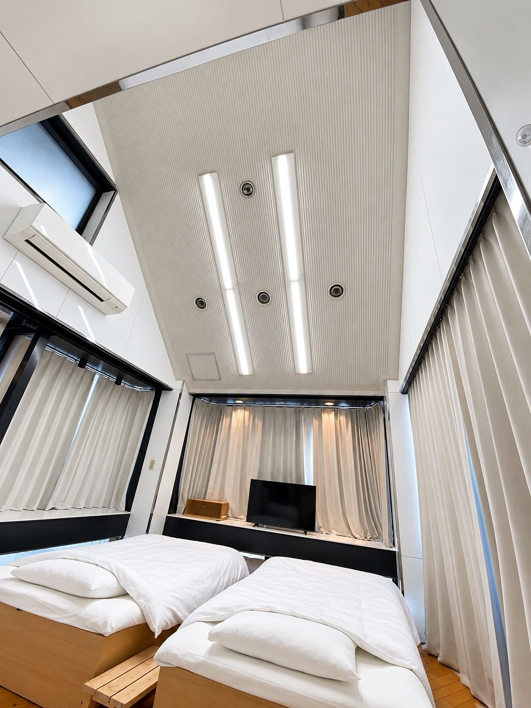
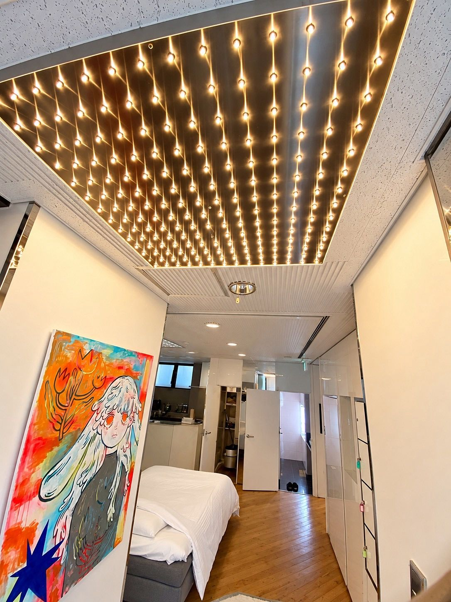
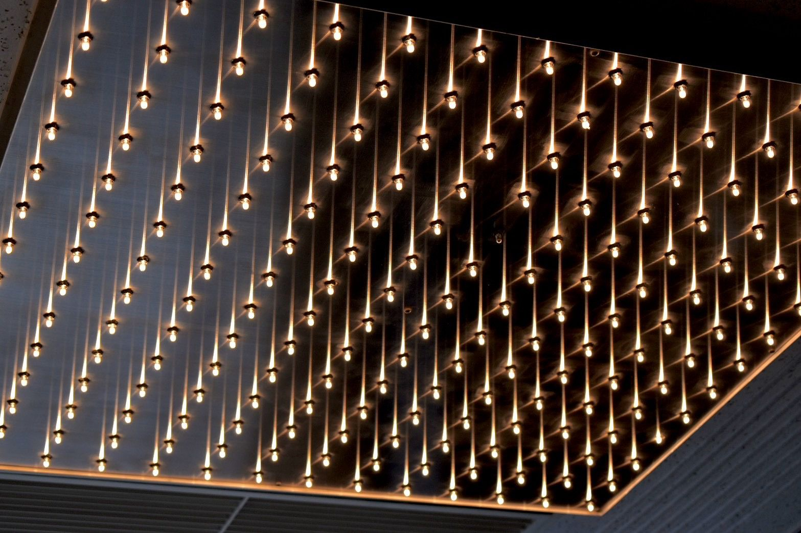
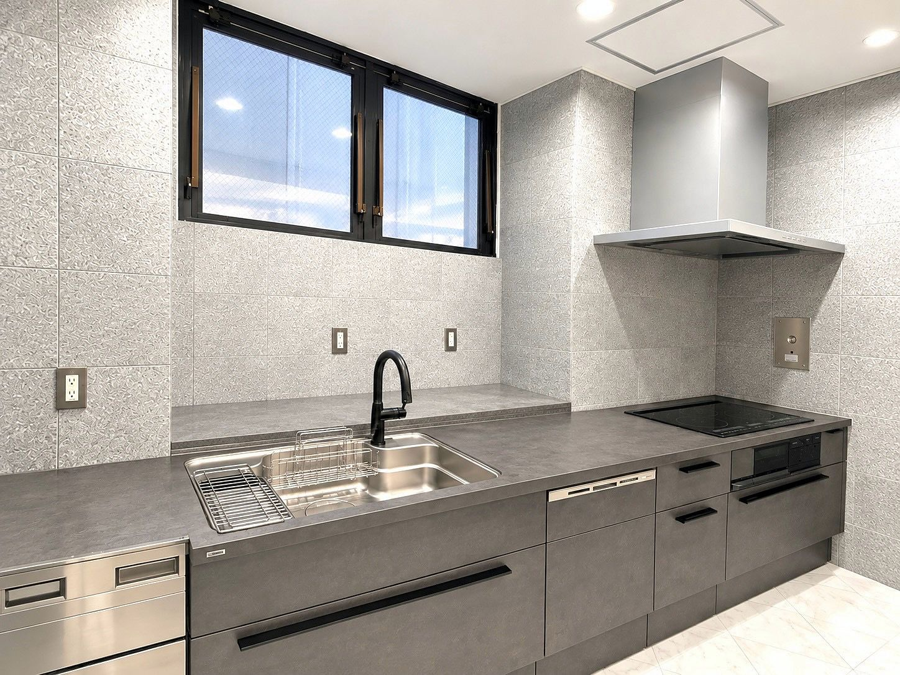
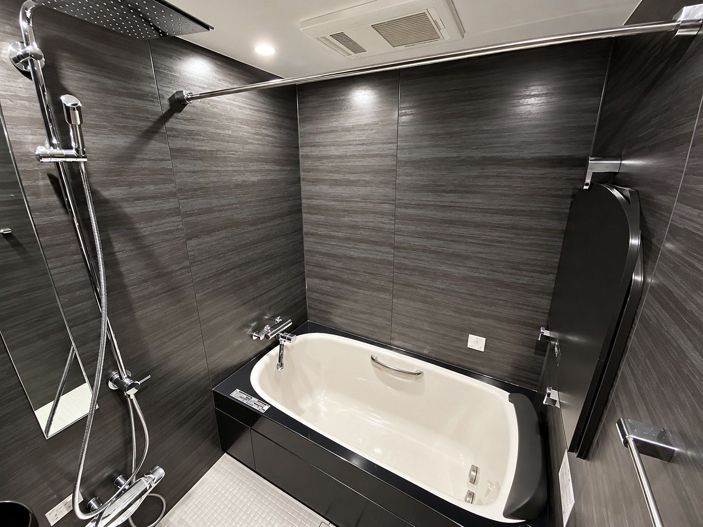
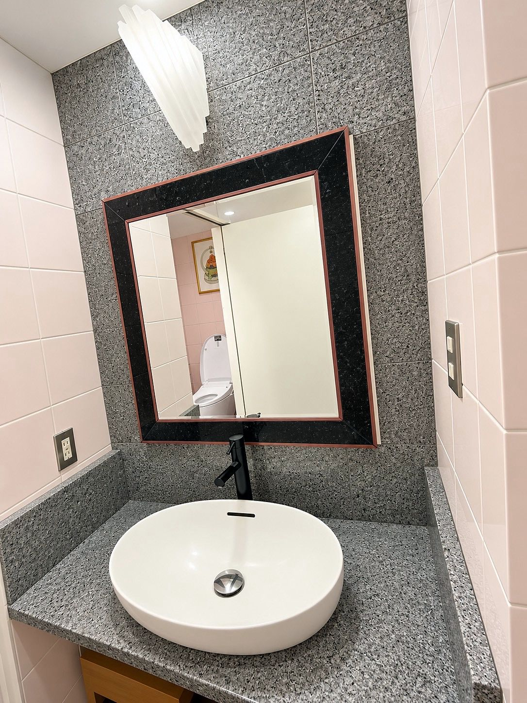
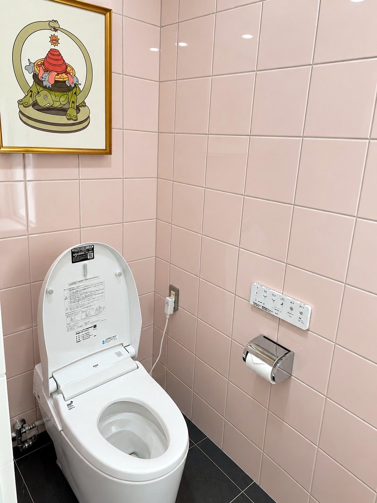
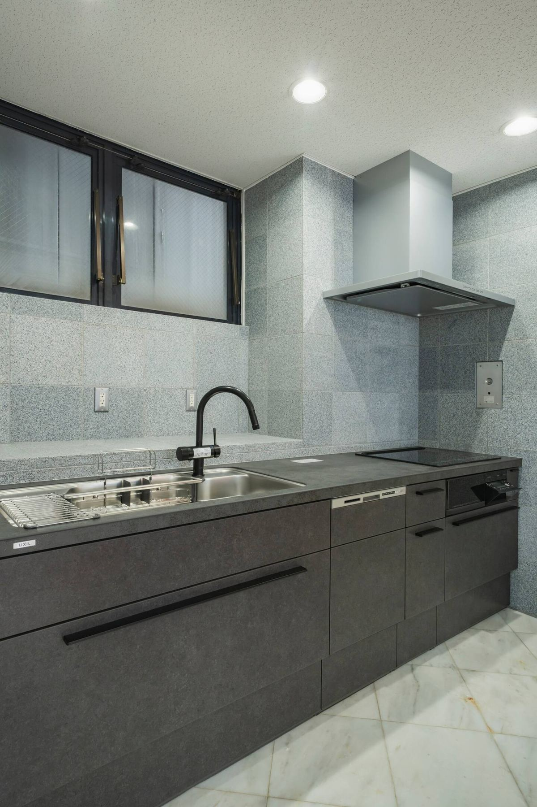
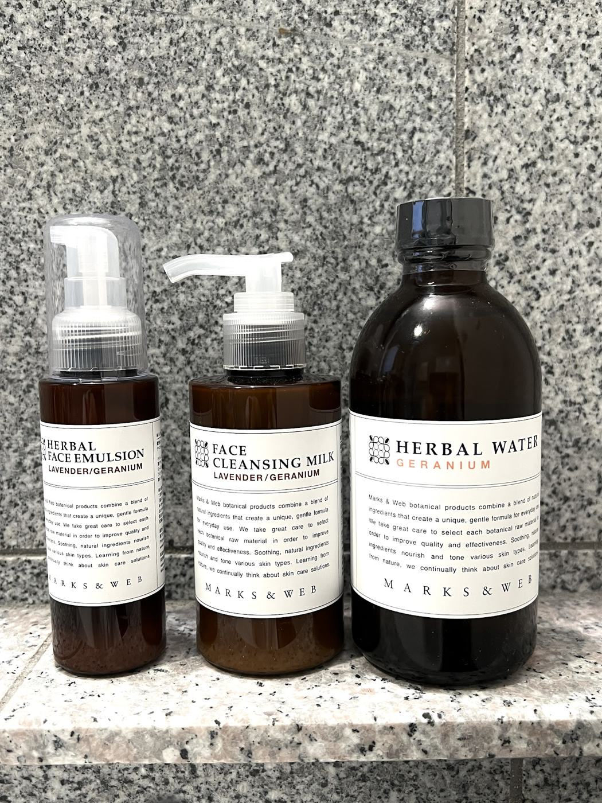
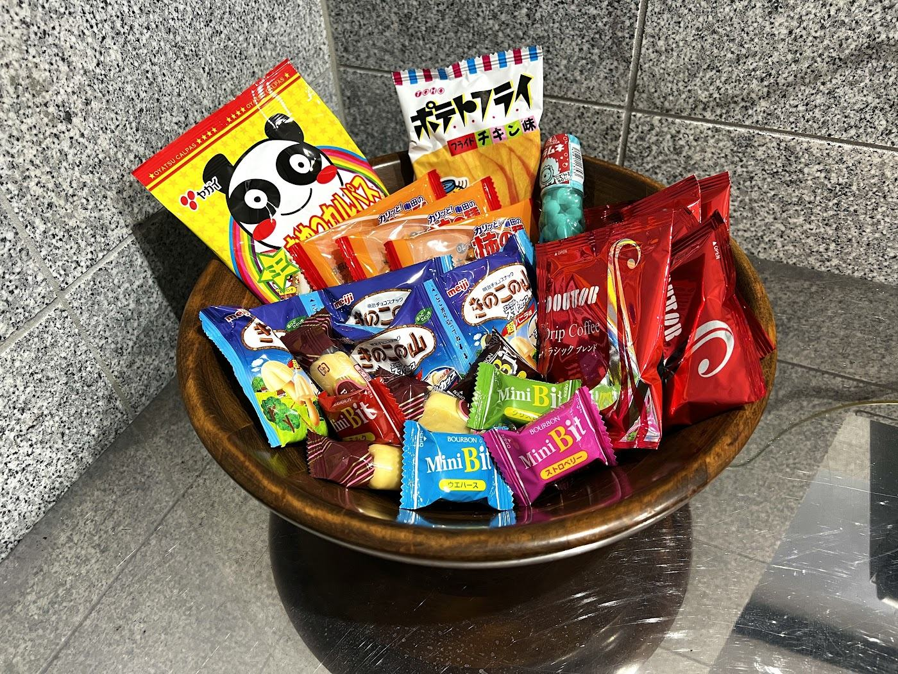

CENTRAL PARK ・ PHOTO JOURNAL
나무 사이에서의 하루.
천창의 빛에 깨어나 상점가에서 아침을 사고 다다미 위에서 영화를 봅니다. 도시에 사는 듯한 하루를 사진으로.
PHOTOS ・ 33


















CENTRAL PARK ・ PHOTO JOURNAL
천창의 빛에 깨어나 상점가에서 아침을 사고 다다미 위에서 영화를 봅니다. 도시에 사는 듯한 하루를 사진으로.
PHOTOS ・ 33









